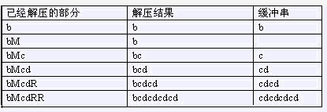

给一个由小写字母组成的字符串，我们可以用一种简单的方法来压缩其中的重复信息。压缩后的字符串除了小写字母外还可以（但不必）包含大写字母 $R$ 与 $M$，其中 $M$ 标记重复串的开始，$R$ 重复从上一个 $M$（如果当前位置左边没有 $M$，则从串的开始算起）开始的解压结果（称为缓冲串）。
bcdcdcdcd可以压缩为bMcdRR，下面是解压缩的过程
bcdcdcdcd
bMcdRR

另一个例子是abcabcdabcabcdxyxyz可以被压缩为abcRdRMxyRz。
abcabcdabcabcdxyxyz
abcRdRMxyRz
输入仅一行，包含待压缩字符串，仅包含小写字母，长度为 $n$。
输出仅一行，即压缩后字符串的最短长度。
bcdcdcdcdxcdcdcdcd
12
$100\%$ 的数据满足：$1 \le n \le 50$
 Comet OJ
Comet OJ